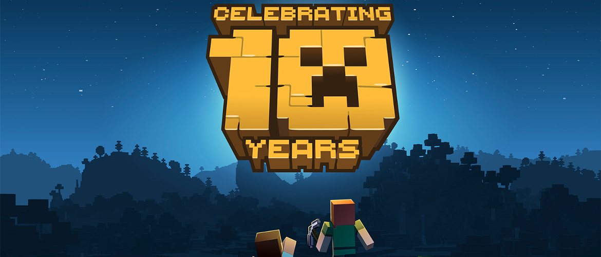
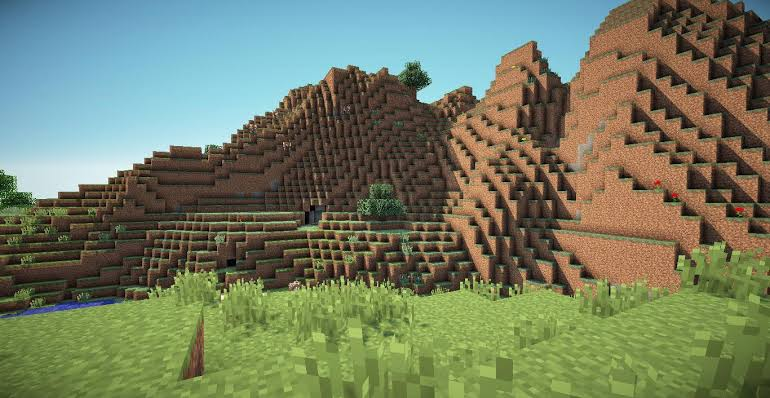

Introdução
Minecraft, lançado em 2009, é um jogo fantátisco, nele o jogador pode fazer o que tiver vontade, o jogo é moldado pela imaginação do jogador. Tudo é personalizável, desde controles e aparência, até a física e funcionamento do jogo.

MINECRAFT IMORTAL E ONIPRESENTE?
Ao que parece meus amigos, sim. Minecraft está disponível para todas as plataformas que eu consigo me lembrar, Nintendo Switch, PS3, PS4, XBOX 360, XBOX ONE, PC, Android, IPhone, calculadora, etc. Além de poder ser jogado em tudo quer dispositivo, o jogo recentemente completou 10 anos e está longe de cair no esquecimento, já que conta com as invenções dos usuários.
Singleplayer
Sobrevivência
Nesse modo, o objetivo de Steve (skin padrão do jogo) é progredir com seus recursos e equipamentos para derrotar o Ender Dragon e assim "zerar o jogo", mas o jogador não precisa parar por aí, ele pode continuar explorando o mundo, baixar e jogar mods; e construir o que imaginar (apesar de que é preferível usar o criativo para isto).
Criativo
Nesse modo, o jogador tem recursos ilimitados, pode voar e não toma dano, por isso é preferível para construir. Alguns jogadores constroem para sí mesmos. Outros constroem mapas complexos, com história pré-definifida, configurações alteradas e até mesmo alguns mods. Uma outra parcela constrói mapas de arcade. Depois de concluídos, esses mapas podem ser disponibilizados para download e jogados por outras pessoas.
Multiplayer
Apesar de tudo que já foi falado no Singleplayer ser incrível, o que "sustenta" mesmo o Minecraft é seu modo Multiplayer, lotado de servidores, que por sua vez são lotados de minigames e usuários. Existem muitos tipos de minigames, Skywars, Hunger Games, Prison, Factions, Bedwars, etc, que podem ser jogados em diversos servidores, basta que o jogador escolha um servidor que tenha o minigame desejado. Os minigames são, na minha opinião, o que garante a sobrevivência do jogo após tanto tempo, pois a comunidade de servidores está sempre inovando e trazendo mais formas de diversão para os players.
Jogabilidade
Minecraft tem uma jogabilidade bem simples, que varia de acordo com a plataforma que está sendo usada para jogar.
No Mobile, os controles estão na tela e são bem intuitivos:

Nos consoles (XBOX e PlayStation), os controles são bem parecidos:


No computador há uma gama maior de controles, mas nada complicado também.
Gráficos
Os gráficos do jogo são bem infantis e nem um pouco realistas, mas este nunca foi o foco do jogo e dentro desse aspecto se tornam aceitáveis.
Conclusão
Recomendo extremamente, é um jogo fenomenal e um dos melhores que já existiram.